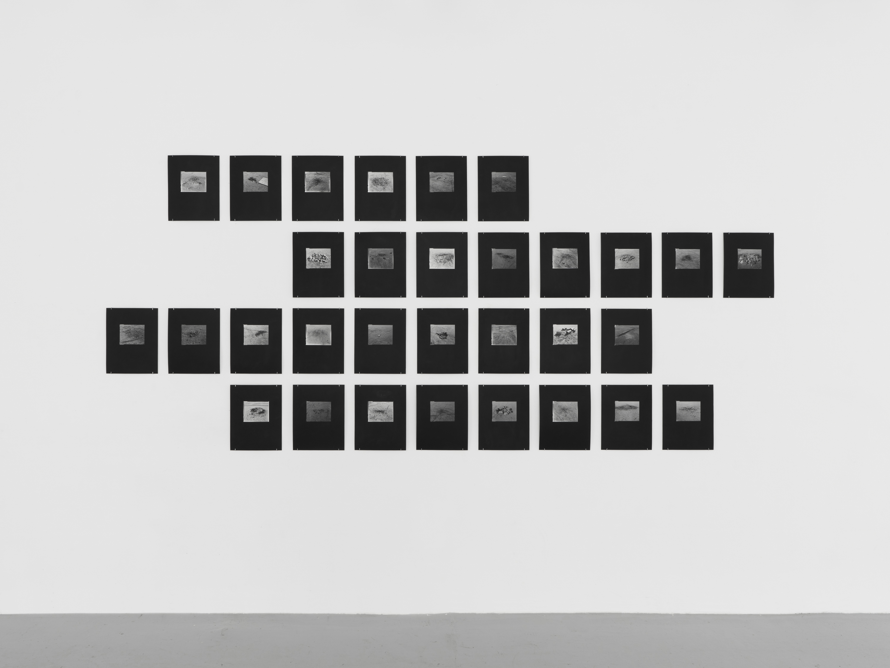
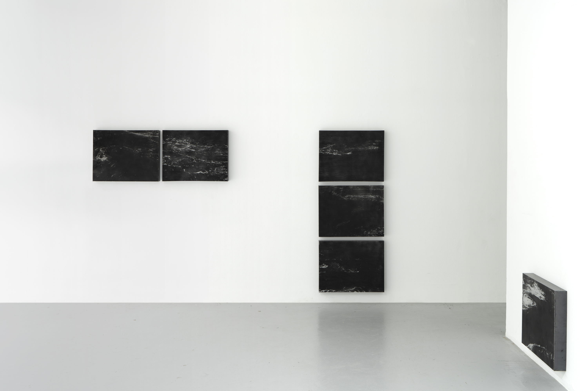
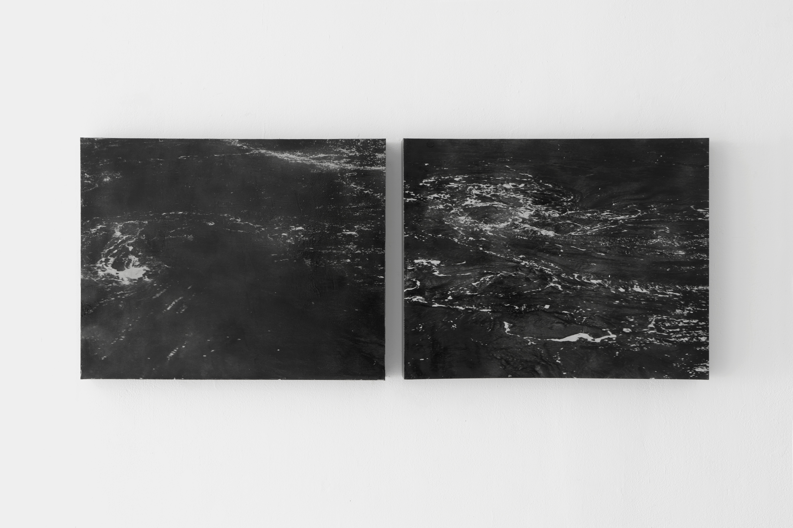
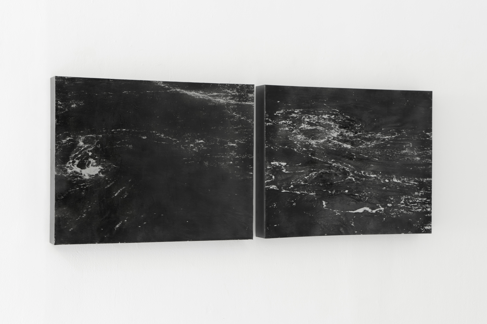
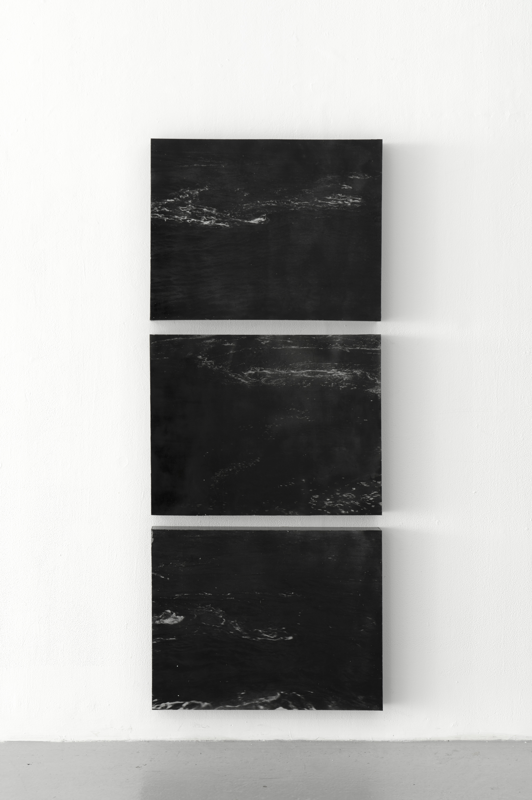
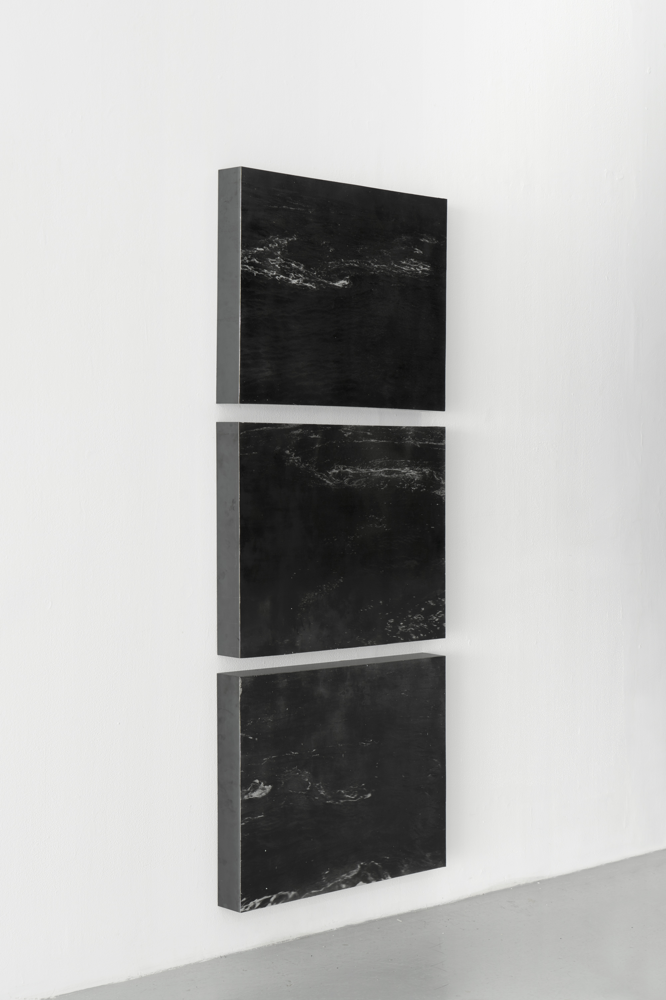
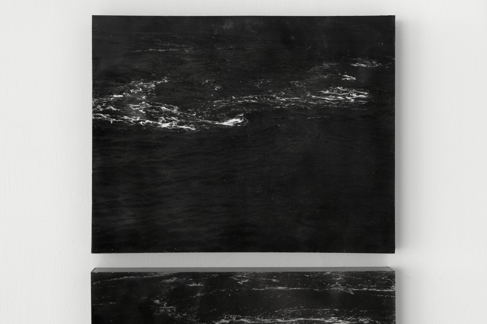
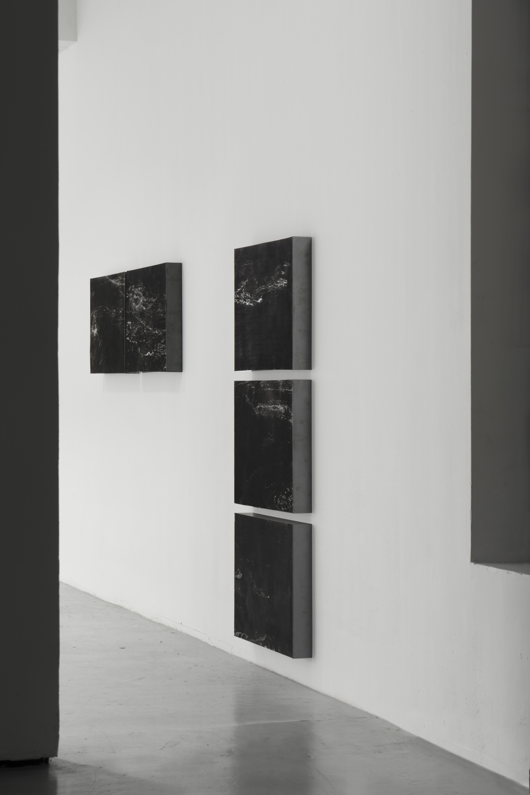
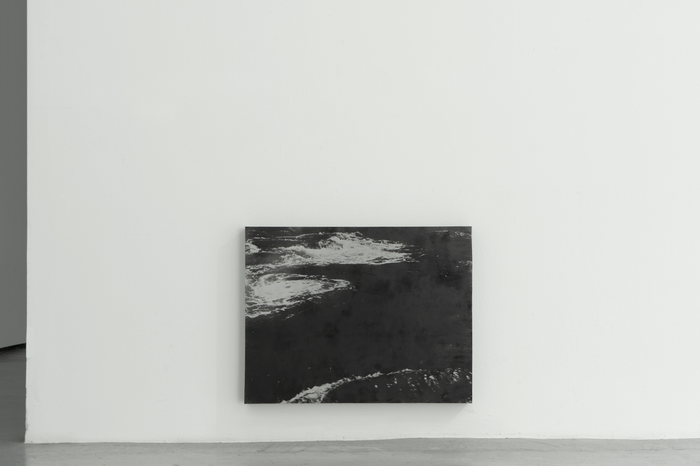
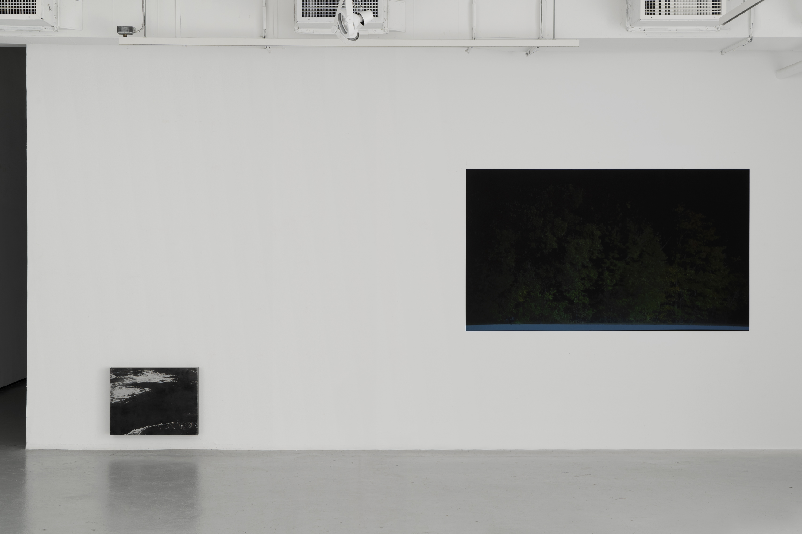

Installation view at Yale School of Art, 2022.
some beacons, 2022, 31 gelatin silver contact prints mounted on black illustration board, 12.5" × 10" each, 56" × 132" overall.
Installation view of i sailed backwards to escape the current (between scylla and charybdis) I–III, 2022.
 i sailed backwards to escape the current (between scylla and charybdis) I, 2022, oxidized aluminum plates with varnish and steel supports, foam, 19.75" × 52" × 3".
 i sailed backwards to escape the current (between scylla and charybdis) II, 2022, oxidized aluminum plates with varnish and steel supports, foam, 62.25" × 25.25" × 3"
i sailed backwards to escape the current (between scylla and charybdis) II, 2022 (detail), oxidized aluminum plates with varnish and steel supports, foam, 62.25" × 25.25" × 3".
i sailed backwards to escape the current (between scylla and charybdis) I + II, 2022 (installation view), oxidized aluminum plates with varnish and steel supports, foam.
i sailed backwards to escape the current (between scylla and charybdis) III, 2022, oxidized aluminum plate with varnish and steel support, foam, 19.75" × 25.25" × 3".
Left: i sailed backwards to escape the current (between scylla and charybdis) III, 2022, oxidized aluminum plate with varnish and steel support, foam, 19.75" × 25.25" × 3". Right: untitled racetrack, 2021–2022, looping HD video projection (00:05:43) on hardboard with enamel paint and stereo sound in adjacent hallway.
The pure products of America
go crazy –
—William Carlos Williams
Jessica Tang (b. 1992, New York, NY) makes images of modern mirabilia. Much of her work is concerned with the absurdities of our built environment and the historicization of the American landscape. The experience of viewing the photographs can be frustrating, unless one is made aware of their context, which is often a sideways glance at natural or historic hyperbole that appears within the frame only in traces. There is a queer sensibility to Tang’s undermining of the monumentality of her subjects, and her interest in American marginalia. Tang’s MFA thesis work, entitled three or three and a half orbits, expresses a subversive sense of humor beneath a maddeningly inscrutable surface.
The exhibition opens in the hallway outside the gallery with the sound of car engines revving to a cyclical rhythm.Stepping into the gallery, the visitor is confronted with a mysterious rectangle of painted black hardboard hung on the wall, which upon closer scrutiny reveals untitled racetrack, 2021–22. A looping video projected onto a black ground frames a static shot of the trees that line an oval racetrack absorbing the air displaced by cars churning around in circles. The patient visitor can connect the sound of engines outside the gallery with the rhythm of the wind. One can imagine Tang turning away from the race and focusing her attention on the unnatural choreography of the trees.
Throughout the exhibition, the viewer makes their way into the work in a similar way to Tang herself: through repeat visits and close observation. The two series of images on view, some beacons, 2021–2022 (31 parts) and I sailed backwards to escape the current (between scylla and charybdis), 2022 (6 parts), respectively document the burned-out fire pits of the all-but-abandoned California City, and a tidal whirlpool in the Passamaquoddy Bay. Like much of Tang’s work, these two bodies of work are disorientingly serial. None of the images on display include a horizon or human figure, nor do they use color. Instead, the viewer is orientated through a sculptural installation of quite similar images.
In I sailed backwards…, the pictures are made with a contradictory use of materials that takes from the languages of both photography and sculpture. The images are oxidized onto aluminum plates through a process Tang developed in which emulsion is used as a resist and then washed away. The dark and light areas of the images are revealed through the oxidization of the uncoated aluminum. Inverting the role of emulsion as the photo-sensitive element in a latent image, I sailed backwards… can be read as an effort to subvert the fixity of printmaking processes, and to escape the primacy of light in the medium of photography. Once oxidized, the plates are then mounted on steel supports, and installed in an asymmetrical hopscotch on the wall. The systematic repetition and zig-zagging line-ups of these series evokes the influence of postmodern dancers like Yvonne Rainer on Tang’s practice. The artist herself describes the act of taking and also viewing the images as an “orbit,” which recalls the compulsive force of gravity as well as the exasperation of “going around in circles.”
To be faced with the repetition of these contextless images–mysterious pits of charcoal and debris, dancing trees, or the spiral of a whirlpool–is like playing a game of charades where the actor makes the same unrecognizable gesture over and over again. But, as Zoe Leonard has remarked, “repetition makes its own logic.” Tang translates this to her work through the addendum that “the work becomes a scaffold for itself.” Though the photographs have a sense of humor and create a maddening choreography, these bodies of work are also highly structured and follow an empiricist's logic. The “orbits” Tang performs to make these photographs begin from an interest in a place or a practice, and evolve through repeated site visits and a visual hypothesis. Synthesizing art and science, as photography was conceived to do at its outset in the 19th century, Tang’s MFA thesis exhibition forms a dance, an orbit, and a kind of brutal comedy about the logical absurdities of the modern American landscape and how one might move through them.